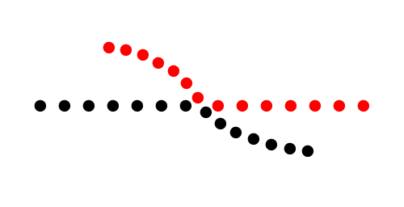

Теория
Принцип №3: Продолжение
Элементы, расположенные на линии или кривой, воспринимаются более связанными, чем элементы не на линии или кривой.
Элементы, следующие непрерывной линией, воспринимаются как сгруппированные. Чем более гладкие участки линии, тем более единую форму мы видим — наш ум предпочитает путь наименьшего сопротивления.
Расположим данные элементы в строку:
-
Добавьте свойство
display: inline-blockдля тегаli
index.html
Результат